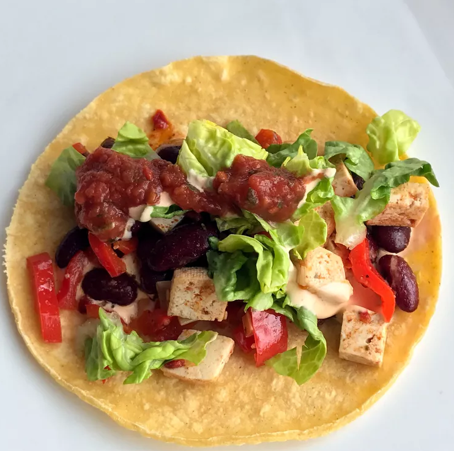

Tofu Tacos Recipe

Description
Ingredients
- 1 (16 ounce) package garden herb tofu, crumbled
- 2 tablespoons vegetable oil
- 1 clove garlic, minced
- ½ cup chopped onion
- 2 teaspoons chili powder
- ¼ teaspoon paprika
- ¼ teaspoon dried oregano
Steps
- Cook tofu, oil, garlic, and onion in a large skillet over medium heat for 5 minutes. Add chili powder, paprika, cayenne, cumin, salt, lime juice, and tomato sauce to the skillet and stir. Cook for 3 minutes.
-
Stir in cilantro. Spoon mixture into a bowl.
- Spoon tofu mixture into taco shells. Top the mixture with lettuce, tomatoes, avocado, cheese, and salsa.